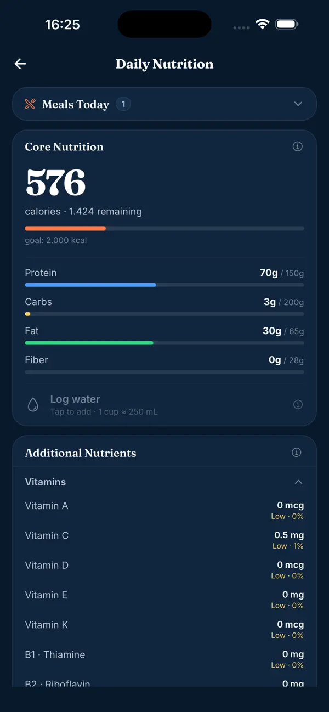

Nutrition estimates
A recipe nutrition calculator that doesn't need a spreadsheet
Most "recipe nutrition calculators" still need you to type in every ingredient yourself. Here's what's actually involved in that calculation, and a faster way to get the same answer.
What a recipe nutrition calculator actually does
Whatever form it takes — a web tool, a spreadsheet, an app — a recipe nutrition calculator is doing the same four things:
- Taking a list of ingredients and their quantities.
- Looking up nutrition data for each one, ideally from a real database rather than a guess.
- Summing every ingredient into a total for the whole recipe.
- Dividing by how many servings the recipe makes.
The part most calculators don't solve
Most tools that call themselves a "recipe nutrition calculator" only automate step 2 and 3 — you still have to manually type every ingredient and quantity in yourself first. For a 10-ingredient recipe, that's still 10 manual entries before you see a single number.

What MacroChef does differently
MacroChef skips the manual entry step entirely. Paste a link to a recipe — from a website, TikTok, or Instagram — and it reads the recipe itself: ingredients, quantities, and steps, then calculates a per-serving nutrition estimate automatically, cross-referencing USDA FoodData Central and Open Food Facts where it can and using AI estimation to fill gaps where a direct match isn't available.
You get the same four-step calculation above, done for you, starting from the recipe link instead of a blank ingredient list.
Paste your next recipe link into MacroChef
Free to download. Import from a website, TikTok, or Instagram.
Download MacroChef